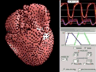

Information
Takashi Ijiri
Ph.D., Information Science and Technology
Associate Professor, Interactive Graphics Lab, Shibaura Institute of Technology
mail: takashi.ijiri80 AT gmail.com
Ph.D., Information Science and Technology
Associate Professor, Interactive Graphics Lab, Shibaura Institute of Technology
mail: takashi.ijiri80 AT gmail.com
Research Interests
3D modeling, Fabrication Texture synthesis, Segmentation
Image / Volume / Video processing
Hobby: Classical guitar, Badminton, Baseball, etc.
Image / Volume / Video processing
Hobby: Classical guitar, Badminton, Baseball, etc.
Short Bio.
| April 2017 - | Present | Associate Professor , Shibaura Institute of Technology. |
| April 2015 - | Present | Visiting Researcher , RIKEN. |
| Aug. 2016 - | March 2021 | Visiting Researcher , National Cerebral and Cardiovascular Center (2014/9-2016/3). |
| April 2017 - | March 2021 | Senior Researcher , Keio Research Institute at SFC (visiting researcher). |
| April 2015 - | March 2017 | Lecturer, Ritsumeikan University. |
| April 2012 - | March 2015 | Special Postdoctoral Researcher, Image Processing Research Team, RIKEN. |
| April 2013 - | March 2016 | Visiting Associate Professor , Dept. Human Mechanical Systems & Design, Hokkaido U. |
| April 2009 - | March 2012 | Postdoctoral Researcher , Biological infrastructure construction team, RIKEN. |
| April 2004 - | March 2009 | Graduate student , The University of Tokyo. Mentored by Prof. Takeo Igarashi. |
| April 2000 - | March 2004 | Undergrad. student , Tokyo Institute of Technology. Mentored by Prof. Etsuya Shibayama. |
Software
| RoiPainter3D | |
| RoiPainter4D | |
 |
Vo-Tracer Software page at RIKEN |
Selected Publications
|
Automatic Spin Measurements for Pitched Baseballs via Consumer-Grade High-Speed Cameras Signal Image and Video Processing [project page] [Springer page] |
|
| Modeling Plant Life in Computer Graphics ACM SIGGRAPH 2016 courses [project page] [ACM DL] |
|
 |
CogKnife: Food Recognition From Their Cutting Sounds CEA2016 [project page] |
 |
Interactive Deformation of Structurally Complex Heart Models Constructed from Medical Images Eurographics 2016 short paper. [project page] |
 |
Flower Modeling via X-ray Computed Tomography SIGGRAPH 2014 [project page] [CT volume Libraly] |
| Prediction of open urinary tract in laparoscopic partial nephrectomy by virtual resection plane visualization BMC Urology 2014 [paper - Open access] |
|
 |
Bilateral Hermite Radial Basis Functions for Contour-based Volume Segmentation EUROGRAPHICS 2013. [Project page] |
|  | A Kinematic Approach for Efficient and Robust Simulation of the Cardiac Beating Motion PLoS ONE, 2012. Project Page |
| Contour-based Interface for Refining Volume Segmentation Pacific Graphics 2010. Project Page |
|
 |
ProcDef: Local-to-global Deformation for Skeleton-free Character Animation Pacific Graphics 2009. Project Page |
Services
2022. 情報処理学会・画像電子学会, VCシンポジウム, プログラム委員長.
2022. 情報処理学会，HCI研究会，運営委員.
2022. 情報処理学会，エンタテインメントコンピューティング研究会，運営委員.
2021. 情報処理学会・画像電子学会, VCシンポジウム, プログラム副委員長.
2019. VRST 2019 program comittee.
2019. 情報処理学会・画像電子学会，VCシンポジウム，運営委員・プログラム委員.
2019. 情報処理学会，HCI研究会，運営委員.
2018. VRST 2018 program comittee, Demo/Poster Chair.
2018. 情報処理学会・画像電子学会，VCシンポジウム，運営委員・プログラム委員.
2018. 情報処理学会，HCI研究会，運営委員.
2017. 情報処理学会，HCI研究会，運営委員.
2017. VC/GCAD合同シンポジウム，運営委員.
2016. Local executive committee. Pacific Graphics.
2016. International Program Committee. Pacific Graphics.
2016. Organizer. ACM CHI 2016 Symposium on Emerging Japanese HCI Research Collection.
2014. Program Committee. The 20th ACM Symposium on Virtual Reality Software Technology.
2014-2017. VC/GCAD合同シンポジウム2014,2015,2016,2017, プログラム委員
2013-2016. 情報処理学会 グラフィクスとCAD研究会，運営委員.
2010. Pacific Graphics 2010, Program Committee.
Paper review : SIGGRAPH, SIGGRAPH ASIA, TOG, VRST, CGF, EuroGraphics, PacificGraphics, PLoS ONE and so on.
2022. 情報処理学会，HCI研究会，運営委員.
2022. 情報処理学会，エンタテインメントコンピューティング研究会，運営委員.
2021. 情報処理学会・画像電子学会, VCシンポジウム, プログラム副委員長.
2019. VRST 2019 program comittee.
2019. 情報処理学会・画像電子学会，VCシンポジウム，運営委員・プログラム委員.
2019. 情報処理学会，HCI研究会，運営委員.
2018. VRST 2018 program comittee, Demo/Poster Chair.
2018. 情報処理学会・画像電子学会，VCシンポジウム，運営委員・プログラム委員.
2018. 情報処理学会，HCI研究会，運営委員.
2017. 情報処理学会，HCI研究会，運営委員.
2017. VC/GCAD合同シンポジウム，運営委員.
2016. Local executive committee. Pacific Graphics.
2016. International Program Committee. Pacific Graphics.
2016. Organizer. ACM CHI 2016 Symposium on Emerging Japanese HCI Research Collection.
2014. Program Committee. The 20th ACM Symposium on Virtual Reality Software Technology.
2014-2017. VC/GCAD合同シンポジウム2014,2015,2016,2017, プログラム委員
2013-2016. 情報処理学会 グラフィクスとCAD研究会，運営委員.
2010. Pacific Graphics 2010, Program Committee.
Paper review : SIGGRAPH, SIGGRAPH ASIA, TOG, VRST, CGF, EuroGraphics, PacificGraphics, PLoS ONE and so on.
Reports and Awards
| 2021/06/25 | 情報処理学会 コンピュータグラフィックスとビジュアル情報学研究会, 優秀研究発表賞, Harmonic Coordinateを用いた自由形状変形法による嚥下4次元CT画像の領域分割． |
| 2020/12/04 | Visual Computing 2020, 企業賞 (ポリフォニー・デジタル賞), 多視点ブラケット撮影による深度合成手法および評価用データセットの構築 (邱 雨澄, 小檜山 賢二, 田中 浩也, 井尻 敬)． |
| 2020/11/04 | ACM Symposium on Virtual Reality Software and Technology (VRST), Honorable Mention Poster, Ray-Casting-based 3D Pointing and Dragging Interface for Naked-Eye Stereoscopic Displays. |
| 2018/06/23 | 情報処理学会グラフィクスとCAD研究会, 優秀研究発表章, X線CTと写真を用いたテクスチャ付き三次元モデルの生成法. (VC賞受賞) |
| 2014/06/28 | 情報処理学会グラフィクスとCAD研究会, 優秀研究発表賞, Bilateral Domainに拡張した陰関数による画像領域分割法．(VC賞受賞) |
| 2012/10/25 | 経済産業省, Innovative Technologies (特別賞 : Human), 『リアルタイム3次元心臓拍動シミュレータ』． link(pdf) |
| 2011/06/27 | 情報処理学会グラフィクスとCAD研究会, 優秀研究発表賞, 輪郭線編集による三次元抽出領域の修正インタフェース． |
| 2011/04/20 | 文部科学省, 平成23年度 科学技術分野の文部科学大臣表彰 若手科学者, 『生物の複雑な形態や動きを計算機内で構築する環境の研究』．link(pdf) |
| 2011/03/03 | 情報処理学会, 山下記念研究賞, 柔軟な物体の能動的な動作の表現手法． |
| 2010/07/16 | 情報処理学会グラフィクスとCAD研究会, 優秀研究発表賞, 柔軟な物体の能動的な動作の表現手法．(VC賞受賞) |
| 2010/04/17 | (財)船井情報科学振興財団, 船井学術奨励賞, 『複雑な構造を持つ生物のためのモデリングインタフェースに関する研究』．link |
| 2009/07/13 | 情報処理学会グラフィクスとCAD研究会, 優秀研究発表賞, 開花アニメーションのための花弁の成長シミュレーション． |
| 2009/03/23 | 東京大学大学院 情報理工学系研究科, 研究科長賞. |
| 2009/03/19 | 芸術科学会, NICOGRAPH 2009 春季大会, CG国際大賞受賞優秀賞, 『Lapped Solid Textures Filling a Model with Anisotropic Textures』. |
| 2008/05/28 | Graphics interface 2008, Michael A. J. Sweeney Award (best student paper award). 『Surface-based growth simulation for opening flowers』. |
| 2008/03/28 | 芸術科学会, NICOGRAPH 2008 春季大会, CG国際大賞審査員特別賞, 『Floral diagrams and inflorescences: Interactive flower modeling using botanical structural constraints』. |
| 2006/05/17 | 情報処理振興事業協会(IPA) 未踏ソフト創造事業(2005年度), 天才プログラマー/スーパークリエータ認定. |
| 2005/05/18 | 情報処理振興事業協会(IPA) 未踏ソフト創造事業(2004年度, 未踏ユース), 天才プログラマー/スーパークリエータ認定. |
| 2005/06/16 | 画像電子学会, Visual Computing / グラフィクスとCAD 合同シンポジウム, VC賞(Poster部門), スケッチベースの草花のモデリング. |